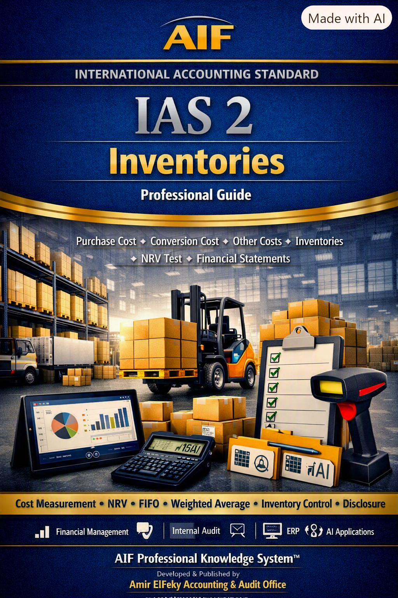

IAS 2 – Inventories
Recognition • Measurement • Cost Formulas • NRV • Disclosure
IFRS • Internal Audit • Financial Governance • CFO Intelligence
Professional Standards
International Reporting Framework
Executive Knowledge Systems
Strategic Finance Insights
Welcome to the AIF™ Professional Knowledge Center. This library contains Executive Operating Systems designed for CFOs, Finance Directors, Internal Auditors, External Auditors and Executive Leaders. Each publication transforms IFRS requirements into practical decision-making frameworks, governance tools, audit programs, executive dashboards and AI-enabled guidance.
Executive Knowledge Series
AIF™ Executive Framework for IAS 2, converting inventory accounting requirements into an integrated operating model covering recognition, valuation, governance, audit readiness, executive reporting, and AI-assisted decision support.

Executive Knowledge Series • 1 Professional Guide Published
Recognition • Measurement • Cost Formulas • NRV • Disclosure
AIF Professional Knowledge System™ delivers executive implementation guides, audit methodologies, ERP frameworks and AI-assisted decision support for accounting professionals.
Published Standard
Planned Standards
Decision Support Ready